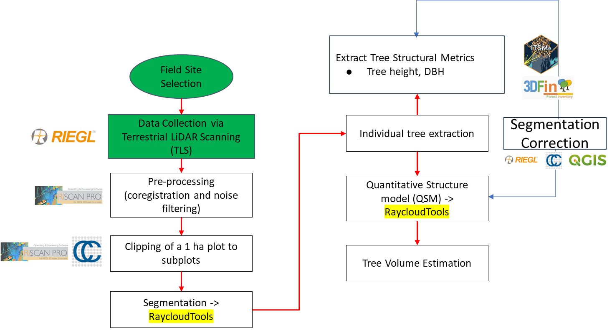

TLS Data Processing Pipeline Tutorial

This tutorial provides a complete workflow for terrestrial laser scanning (TLS) data, from scan registration to tree volume estimation. Each section includes detailed steps, code examples, and outputs.
This tutorial provides a complete workflow for terrestrial laser scanning (TLS) data, from scan registration to tree volume estimation. Each section includes detailed steps, code examples, and outputs.
In this tutorial, the TLS data processing pipeline is broken down into 15 practical steps. Each step addresses a specific task, from aligning raw scans to estimating tree-level attributes. The co-registration manual is for the TLS VZ 400i. Together, these steps guide you from the raw input (multiple TLS scans) to final outputs such as DBH (Diameter at Breast Height), tree height, crown dimensions, leaf/wood classification, and individual tree volume.
